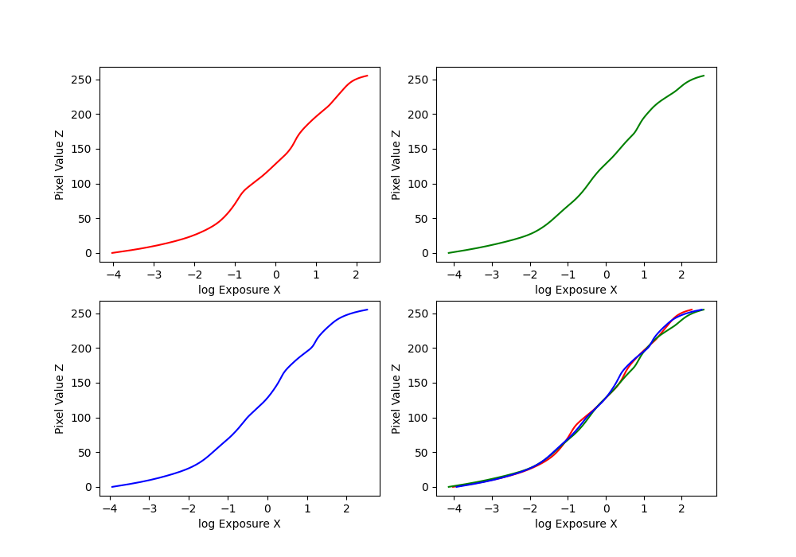

I used the provided starter code from https://browncsci1290.github.io/webpage/projects/hdr/. In this project, we reconstruct an image based on multiple exposures of the same image, based on the paper "Recovering High Dynamic Range Radiance Maps from Photographs" (Debevec and Malik, 1997).
We use a least squares formulation to estimate the function to map from pixels to radiance values. We set up a series of equations of the form \(ln(E_i) = g(Z_{ij}) - ln(\delta t_j)\). In order to motivate g to be smooth, we also add a regularizing constraint of the form \(\lambda[g(x-1)w(x-1) + g(x+1)x(i+1) - 2g(x)w(x)] = 0\). Now, we just solve using least squares, and extract the relevant variables from the solution.
Estimated g_values for the bonsai images.
Now that we solved for the g values, we can calculate the radiances. The equation is \(lnE_i = [\sum_j w(Z_{ij}(g(Z_{ij} - ln \delta t_j)))]/[\sum_j w(Z_{ij})]\) This was implemented using batched operations for speed. Also, the values for which the sum of w was 0 were ignored. Also, I had to use this code cv2.cvtColor(cv2.imread(file_names[k]), cv2.COLOR_BGR2RGB) to get the images. plt wouldn't work with chapel, and cv2.imread by itself switched up red and blue.
The averaged and clipped radiance maps for the bonsai images.
With the radiance values, we can reconstruct the image with a global tone mapping operator, such as \(E / (1+E)\).
The simple and global tone mappings.
For more satisfying results, we can use local tone blending, where we implement a simplified version of the Durand method, as described in the project spec. I used the hyperparameters dR=4.0, d=5, sigmaColor=15, sigmaSpace=15, gamma = 0.5.
Results for all test images.
As you can tell, the images for the garden were not perfectly aligned, thus the reconstruction was bad. We can recycle the implentation of color channel alignment from project 1, and tweak it to be useful here. The algorithm is pretty much the exact same, using SSD as a distance metric, and an image pyramid to speed up computation. Instead of alining channels, the different images themselves were aligned to one base image.
Garden vs garden w alignment. It is more aligned. I'm not sure where the orange stuff is coming from.